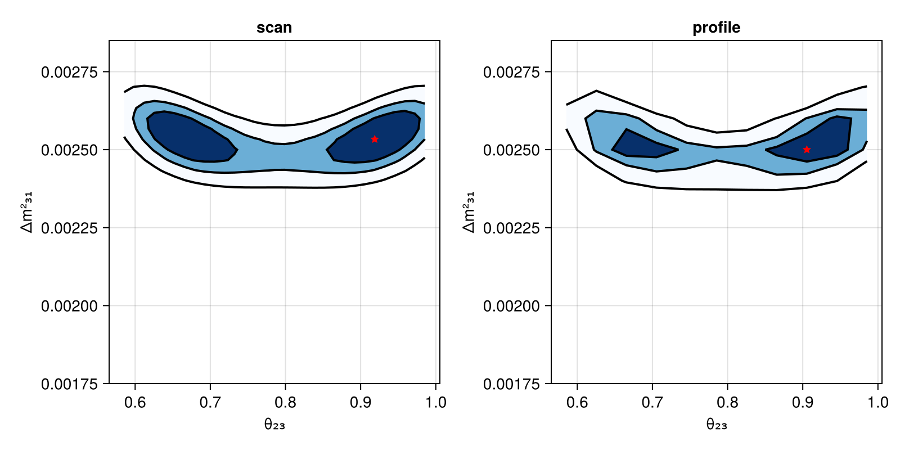

Joint Analysis
This example shows how to combine multiple experiments into a joint likelihood and run profile/scan analyses. For simplicity we use the default physics configuration.
Combining Experiments
using Newtrinos
using DensityInterface
using DataStructures
experiments = (
dayabay = Newtrinos.dayabay.configure(),
kamland = Newtrinos.kamland.configure(),
minos = Newtrinos.minos.configure(),
)Parameters and priors are automatically merged across all experiments and their physics modules:
params = Newtrinos.get_params(experiments)
priors = Newtrinos.get_priors(experiments)
likelihood = Newtrinos.generate_likelihood(experiments)Conditioning (Fixing Parameters)
Fix parameters to specific values before scanning:
conditional_vars = Dict(
:θ₁₂ => params.θ₁₂,
:δCP => 0.0,
:Δm²₂₁ => params.Δm²₂₁,
)
priors = Newtrinos.condition(priors, conditional_vars, params)Likelihood Scan
A scan evaluates the likelihood on a grid without optimization:
using Distributions, Accessors
@reset priors.θ₂₃ = Uniform(pi/4 - 0.2, pi/4 + 0.2)
@reset priors.Δm²₃₁ = Uniform(0.0018, 0.0028)
vars_to_scan = OrderedDict(:θ₂₃ => 31, :Δm²₃₁ => 31)
result_scan = Newtrinos.scan(likelihood, priors, vars_to_scan, params)Profile Likelihood
A profile scan optimizes over nuisance parameters at each grid point:
vars_to_scan = OrderedDict(:θ₂₃ => 11, :Δm²₃₁ => 11)
result_profile = Newtrinos.profile(likelihood, priors, vars_to_scan, params; cache_dir="my_profile")Results are cached to disk, so interrupted runs can be resumed.
Extracting Best Fit
bf_scan = Newtrinos.bestfit(result_scan)
bf_profile = Newtrinos.bestfit(result_profile)Plotting Results
using CairoMakie
fig = Figure(size=(800,400))
ax1 = Axis(fig[1, 1], xlabel="θ₂₃", ylabel="Δm²₃₁", title="scan")
plot!(ax1, result_scan, levels=[0, 0.68, 0.9, 0.99], filled=true, color=:black,cmap=Reverse(:Blues))
scatter!(ax1, bf_scan.θ₂₃, bf_scan.Δm²₃₁, marker=:star5, color=:red)
ax2 = Axis(fig[1, 2], xlabel="θ₂₃", ylabel="Δm²₃₁", title="profile")
plot!(ax2, result_profile, levels=[0, 0.68, 0.9, 0.99], filled=true, color=:black, cmap=Reverse(:Blues))
scatter!(ax2, bf_profile.θ₂₃, bf_profile.Δm²₃₁, marker=:star5, color=:red)
fig